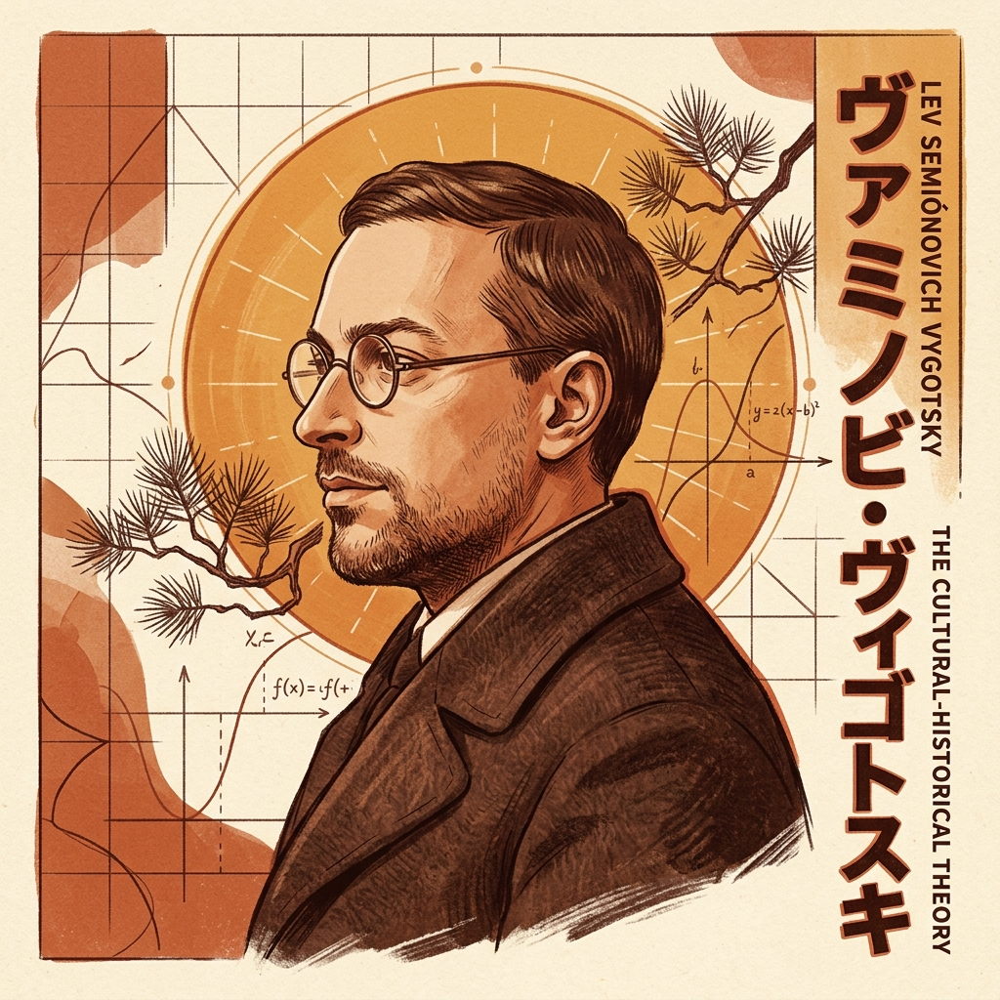
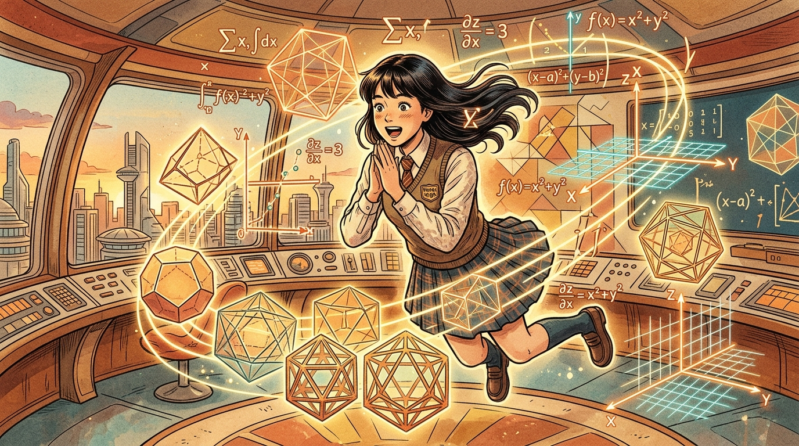
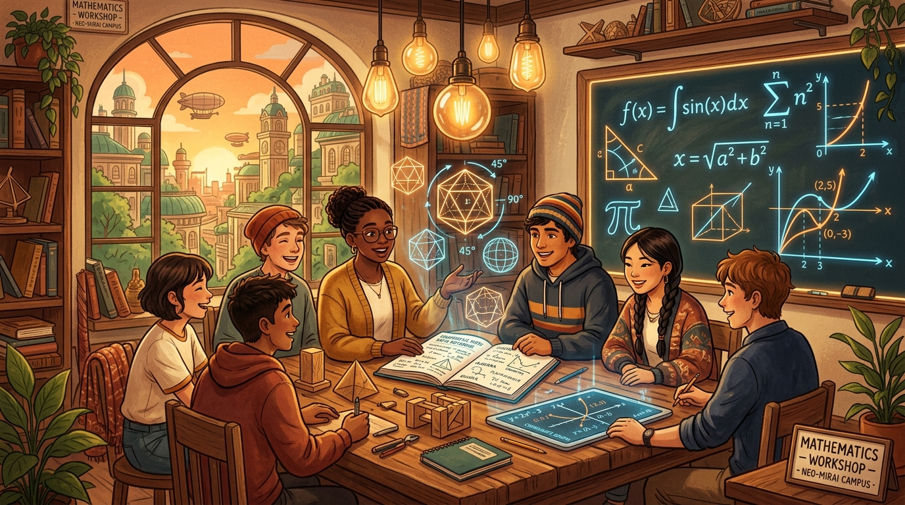

Asignatura: Crecimiento y Desarrollo Entrega: Martes 29 de Septiembre
Teoría Sociocultural de Lev Vygotsky en el Aprendizaje Matemático
Un análisis epistemológico y pedagógico sobre la mediación semiótica, la Zona de Desarrollo Próximo (ZDP) y el andamiaje instructivo aplicado a la enseñanza de las Matemáticas en la adolescencia y la juventud.
Mediación, Andamiaje y Pensamiento en Conceptos発展の最近接領域
Marco Epistemológico
Introducción General a las Teorías del Desarrollo
Las teorías del desarrollo humano constituyen el pilar fundamental para comprender cómo los seres humanos evolucionan desde formas biológicas elementales hasta estructuras cognitivas complejas. En la educación matemática, estas teorías cobran una relevancia crítica: aprender matemáticas no es una acumulación mecánica de fórmulas o algoritmos aislados, sino un proceso de reestructuración cualitativa de la conciencia, donde el individuo aprende a modelar la realidad circundante mediante abstracciones simbólicas compartidas culturalmente.
Propósito de la Plataforma
Objetivo del Sitio Web
El propósito de esta plataforma interactiva es analizar rigurosamente la Teoría Sociocultural de Lev Vygotsky, articulando sus tesis axiales (la Zona de Desarrollo Próximo, la mediación instrumental y semiótica, y la ley de doble formación) con la práctica educativa concreta en el aula de Matemáticas. Nos proponemos ofrecer a la comunidad docente esquemas conceptuales dinámicos, recursos audiovisuales y reflexiones críticas que demuestren cómo el andamiaje pedagógico transforma la comprensión de álgebra, geometría y resolución de problemas en jóvenes y adolescentes.
Fundamentación Teórica
Teoría Sociocultural e Histórico-Cultural
La génesis social de los procesos psicológicos superiores: cómo el lenguaje, los signos matemáticos y la cultura transforman la mente humana.

Autor Principal
Lev Semiónovich Vygotsky
1896-1934 • Orsha / Moscú
Conocido como el "Mozart de la psicología" por su prolífica producción teórica en apenas una década. Se formó en derecho, filología y arte antes de revolucionar la psicología en el Instituto de Psicología de Moscú, integrando el materialismo dialéctico con la semiótica y la educación.
Nacimiento17 Nov 1896, Orsha
Obras ClavePensamiento y Lenguaje (1934)
PaidologíaPaidología del Adolescente (1931)
Impacto DidácticoZDP, Andamiaje y Semiótica
Explicación de la Teoría: De lo Interpsicológico a lo Intrapsicológico
La Teoría Sociocultural postula que el desarrollo cognitivo humano no es el simple despliegue de un programa biológico madurativo innato, ni tampoco una acumulación pasiva de reflejos empíricos. Por el contrario, es una construcción dialéctica e histórica.
Ley Genética General del Desarrollo Cultural (Vygotsky, 1979):
«Cualquier función en el desarrollo cultural del niño aparece en escena dos veces, en dos planos: primero en el plano social, y después en el plano psicológico; primero entre las personas como una categoría interpsicológica, y luego en el interior del propio niño como una categoría intrapsicológica.»
Funciones Psicológicas Inferiores vs. Superiores
Naturales / Elementales
Funciones Inferiores
Determinadas biológicamente. Atención involuntaria, memoria sensorial inmediata y percepción reactiva. Compartidas con animales superiores.
Culturales / Mediadas
Funciones Superiores
De origen social y cultural. Atención voluntaria, memoria lógica, pensamiento abstracto y razonamiento matemático mediado por sistemas semióticos.
La Mediación Semiótica: El Signo como Herramienta Psicológica
Así como las herramientas materiales transforman el medio físico externo, los signos (el lenguaje natural, los números, los sistemas algebraicos y los diagramas geométricos) son herramientas psicológicas orientadas hacia el interior del sujeto, permitiéndole regular y dominar su propia actividad mental.
Triángulo Semiótico de Vygotsky
Estructura de la Actividad Mediada en Matemáticas
Artefacto Semiótico / Signo
(Fórmulas $f(x)$, Símbolos, Gráficos Cartesianos)
Sujeto Cognitivo
(Estudiante de Matemáticas)
Objeto Matemático
(Concepto, Teorema o Relación)
En educación matemática, el alumno no interactúa directamente con el objeto formal en el vacío; su comprensión está mediada por representaciones semióticas (Radford, 2008; Duval, 2006).
Zona de Desarrollo Próximo (ZDP) y Andamiaje
La Zona de Desarrollo Próximo (ZDP) es el constructo más célebre de Vygotsky. Representa el espacio dinámico y fecundo donde la enseñanza tiene lugar:
«No es otra cosa que la distancia entre el nivel de desarrollo real, determinado por la capacidad de resolver independientemente un problema, y el nivel de desarrollo potencial, determinado a través de la resolución de un problema bajo la guía de un adulto o en colaboración con otro compañero más capaz.»
ZONA 1
Desarrollo Real (NDR)
Lo que el estudiante domina de manera autónoma. Funciones cognitivas consolidadas y automatizadas.
ZONA 2 (ZDP)
Zona de Desarrollo Próximo
Funciones en proceso de maduración ("brotes" o "flores" del intelecto). Donde el andamiaje docente actúa.
ZONA 3
Zona Frustrante / Inalcanzable
Contenidos que exceden la capacidad actual, incluso con ayuda. Provoca desmotivación si se fuerza prematuramente.
¿Cómo Define el Aprendizaje Lev Vygotsky?
A diferencia de las posturas innatistas o empiristas clásicas, para Vygotsky el aprendizaje tiene características definitorias trascendentales:
1
El Aprendizaje Precede y Tracciona al Desarrollo:
No se espera pasivamente a que el estudiante "madure" cronológicamente para enseñarle un concepto abstracto. El aprendizaje bien organizado desencadena procesos evolutivos internos que serían imposibles sin la intervención social.
2
Proceso Intrínsecamente Colaborativo:
Aprender es una actividad social de apropiación de instrumentos culturales. La mente no aprende aislada; se desarrolla mediante el diálogo, la controversia constructiva y la interacción intersubjetiva.
3
Internalización de Herramientas de Segundo Orden:
El aprendizaje culmina en la reorganización semiótica: las reglas matemáticas, inicialmente ejercidas en pizarras y cuadernos con supervisión, se convierten en la propia estructura del pensamiento reflexivo del alumno.
Análisis Evolutivo Riguroso
Etapas del Desarrollo: Adolescencia y Juventud según Vygotsky
Una inmersión profunda en la Paidología del Adolescente (1931) y el Tomo IV de las Obras Escogidas de Vygotsky: cómo la edad de transición genera el salto cualitativo hacia el pensamiento en conceptos abstractos y la autoconciencia metacognitiva.
Paidología del Adolescente (Vygotsky, 1931)
La Transición Psicológica Central de la Pubertad
Vygotsky rechazó categóricamente la visión biológica reduccionista que concebía la pubertad como una mera tormenta hormonal. Para la psicología histórico-cultural, la adolescencia (aproximadamente de los 12 a los 18 años) representa una reestructuración cualitativa de las funciones psíquicas superiores.
El eje motor de esta etapa es la transición definitiva desde las formas primitivas del intelecto (el pensamiento sincrético y el pensamiento por complejos) hacia el pensamiento en conceptos puros. Es en esta fase donde el ser humano conquista la capacidad para el simbolismo formal algebraico, la lógica proposicional hipotético-deductiva y la modelación matemática abstracta.

Génesis del Simbolismo FormalÁlgebra & Deducción
Génesis Conceptual
El Camino Genético: De los Complejos al Pensamiento Conceptual Verdadero
En sus experimentos con bloques de Sakharov-Vygotsky, demostró que un adolescente no adquiere un concepto matemático de la noche a la mañana, sino que atraviesa tres macro-estadios evolutivos:
Fase 1
Cúmulos Sincréticos
Niñez Temprana
Agrupación de figuras o números por impresiones subjetivas, contigüidad espacial o ensayo y error ("montones desordenados"). No existe criterio lógico objetivo.
Fase 2
Pensamiento por Complejos
Niñez Media y Púber
Uniones basadas en vínculos fácticos concretos: complejos asociativos, colecciones funcionales, cadenas y complejos difusos.
Fase 2.5
El Pseudoconcepto
Paso a la Adolescencia
Fenoménicamente coincide con el adulto (repite la fórmula $a^2+b^2=c^2$ o dice "triángulo"), pero en su mente opera como una imagen empírica concreta, no abstracta.
Fase 3
Conceptos Abstractos
Adolescencia y Juventud
Capacidad dialéctica de aislar atributos esenciales (abstracción) y sintetizarlos en leyes generales. La mente opera con variables y axiomas sin soporte material.
1. Conceptos Científicos vs. Cotidianos
Los conceptos cotidianos ascienden de lo concreto a lo abstracto ("experiencia de comprar"). Los conceptos científicos matemáticos descienden de la definición formal hacia la aplicación concreta ($f(x) = ax^2$). En la adolescencia, ambos sistemas se encuentran y fertilizan mutuamente.
2. Autoconciencia y Metacognición
Vygotsky señaló que «tomar conciencia de una operación matemática significa trasladarla del plano de la acción al plano del lenguaje interior». El joven adolescente analiza la validez de su propia deducción y autorregula su esfuerzo intelectual.
3. Dinámica de los Intereses
Ocurre la destrucción del viejo núcleo de intereses infantiles y la génesis de intereses superiores: fascinación por la verdad lógica, la causalidad, la controversia dialéctica con sus pares y la búsqueda de sentido vital mediante el rigor científico.
4. Las Crisis de los 13 y 17 Años
Vygotsky explica que en la transición a la pubertad (crisis de los 13 años) se experimenta un reajuste motivacional profundo con rechazo a la imposición memorística y repliegue reflexivo introspectivo. Posteriormente, en el umbral hacia la juventud madura (crisis de los 17 años), emerge la neoformación psicológica culminante: la autodeterminación personal y vocacional, donde el pensamiento matemático conceptual se consolida como herramienta indispensable de pensamiento crítico, autonomía y empoderamiento ciudadano en la sociedad.
Didáctica Paso a Paso
Aplicaciones Concretas y Explicables en el Aula
Escenarios pedagógicos detallados con interacciones reales entre docente y estudiantes, mostrando cómo opera la mediación semiótica, el andamiaje escalonado y el retiro gradual de ayudas.
Escenario 1 • Álgebra y Funciones (3° Secundaria / 14-15 Años)Transición Aritmética a Función Cuadrática
Problema de Optimización del Huerto Escolar: $A(x) = -x^2 + 20x$
Conflicto Semiótico Inicial: Los estudiantes suelen tratar la letra $x$ como una incógnita fija con un único valor numérico (pensamiento por complejos aritméticos), sin percibirla como una variable covariante continua que modifica otra magnitud.
Protocolo de Mediación Dialógica Docente-Alumno:
Docente (Andamio 1 - Registro Tabular): «Si tenemos 40 metros de valla para cercar un huerto rectangular, el semiperímetro es 20 m. Si el ancho mide 2 m, ¿cuánto mide el largo y cuál es el área?».
Estudiante: «El largo sería 18 m, y el área sería $2 \times 18 = 36\text{ m}^2$. Si el ancho es 5 m, el largo es 15 m y el área es $75\text{ m}^2$».
Docente (Andamio 2 - Pregunta de Abstracción Semiótica): «Excelente. Si no sabemos cuánto mide el ancho y lo llamamos $x$, ¿cómo escribimos la expresión algebraica del largo y del área total sin usar números fijos?».
Estudiante (Génesis Conceptual): «Si la suma de ambos lados es 20, el largo tiene que ser $(20 - x)$. Entonces el área es $x$ multiplicado por $(20 - x)$... ¡es una ecuación con $x^2$!».
Explicación Vygotskiana: El docente no entregó la fórmula $A = -x^2+20x$ de forma vertical. Mediante el diálogo guiado en la ZDP y el registro tabular previo, el estudiante pasó del plano interpsicológico (conversación) al intrapsicológico (internalización del concepto de función cuadrática y vértice óptimo).
Escenario 2 • Geometría y Demostración Deductiva (15-16 Años)Génesis Instrumental con GeoGebra
Comprensión Invariante del Teorema de Pitágoras: $a^2 + b^2 = c^2$
Conflicto Semiótico Inicial: Los adolescentes memorizan la fórmula aritmética de cálculo pero son incapaces de justificar por qué se cumple geométricamente, viéndola como una regla mágica y no como una equivalencia de áreas cuadradas.
Secuencia de 3 Momentos de Mediación Semiótica:
Momento 1 (Artefacto Manipulable Concreto): Los alumnos arman puzles de cartulina (Tangram de Perigal) donde las piezas de los cuadrados construidos sobre los catetos $a$ y $b$ se reacomodan exactamente para tapar el cuadrado sobre la hipotenusa $c$.
Momento 2 (Mediación Digital con GeoGebra): El software actúa como artefacto semiótico externo. Al arrastrar los vértices del triángulo en la pantalla, las longitudes cambian continuamente, pero el programa suma las áreas en tiempo real ($Área_A + Área_B = Área_C$). El alumno observa la invarianza relacional.
Momento 3 (Retiro del Artefacto y Demostración Deductiva): El profesor retira el software y guía la demostración formal por semejanza de triángulos:
$$\frac{a}{c} = \frac{c_1}{a} \implies a^2 = c \cdot c_1 \quad \text{y} \quad \frac{b}{c} = \frac{c_2}{b} \implies b^2 = c \cdot c_2$$
$$a^2 + b^2 = c(c_1 + c_2) = c \cdot c = c^2 \quad \blacksquare$$
Explicación Vygotskiana: Ilustra la Génesis Instrumental (Rabardel, 1995; Bartolini Bussi & Mariotti, 2008): el software GeoGebra no es un sustituto de la mente, sino una herramienta mediadora que luego se desvanece cuando la estructura lógica deductiva ha sido completamente asimilada en la mente del estudiante.
Modelación Exponencial: Duplicación Bacteriana y Crecimiento Poblacional
Desafío en la Juventud: Resolver problemas no rutinarios donde la tasa de cambio no es constante (lineal), sino proporcional a la cantidad existente en cada instante temporal.
FASE 1: ANDAMIAJE ALTO
Modelado en Voz Alta
El docente verbaliza su metacognición: "¿Por qué no puedo simplemente sumar 2 cada hora? Porque cada bacteria nueva también se divide".
FASE 2: ANDAMIAJE MEDIO
Pistas Estructuradas
Trabajo en parejas heterogéneas con una tarjeta de pistas: "Observa la secuencia de potencias $2^0, 2^1, 2^2, \dots, 2^t$".
FASE 3: AUTONOMÍA PLENA
Transferencia Intrapsicológica
Retiro total del andamio (*fading*). El alumno aplica autónomamente el modelo $N(t) = N_0 \cdot (1 + r)^t$ a problemas de interés compuesto bancario.

Metodología en Acción
El Aula de Matemáticas como Comunidad de Práctica
En el enfoque vygotskiano, el aula deja de ser un espacio de escucha pasiva e individualista. Se transforma en un taller dinámico donde el diálogo argumentativo, los artefactos manipulables y la mediación docente generan la atmósfera idónea para que el adolescente conquiste la autonomía conceptual.
Ventajas y Limitaciones de la Teoría Sociocultural
Ventajas y Aportes Pedagógicos
Limitaciones y Aspectos Cuestionados
Superación del Individualismo Cognitivo: Reconoce que el conocimiento matemático no se descubre aisladamente, sino que se hereda y recrea en interacción cultural.
Inconclusión Epistemológica: La prematura muerte de Vygotsky a los 37 años impidió un desarrollo empírico más exhaustivo de etapas evolutivas adultas.
Dinamización de la Evaluación: Sustituye las pruebas psicométricas estáticas por la evaluación dinámica, valorando el potencial de aprendizaje del alumno con ayuda.
Riesgo de Dependencia del Andamio: Si el docente no planifica el retiro gradual (fading), el estudiante puede volverse dependiente de las pistas continuas.
Fundamentación del Aprendizaje Cooperativo: Justifica científicamente la efectividad del trabajo en parejas heterogéneas y comunidades de indagación matemática.
Exigencia en Aulas Masivas: Diagnosticar la ZDP individualizada requiere tiempo, ratios bajas de alumnos y formación didáctica altamente especializada.
Revalorización del Rol Docente: El profesor no es un mero espectador pasivo; es el mediador cultural deliberado que guía la génesis del razonamiento formal.
Menor Detalle Neurobiológico: No profundizó en las restricciones madurativas cerebrales y factores genéticos del procesamiento neurocognitivo.
Postura Colectiva del Grupo
Reflexión Crítica del Grupo sobre la Importancia Actual de Vygotsky
Como equipo (Aguirre, González, Mendoza y Zambrano), sostenemos que en un momento histórico marcado por la irrupción de inteligencias artificiales generativas y la digitalización vertiginosa, el pensamiento de Vygotsky es más urgente y revolucionario que nunca. Las matemáticas no son una máquina calculadora desalmada; son un l
Módulo Audiovisual Obligatorio
Video Explicativo del Grupo (3 a 5 Minutos)
Espacio audiovisual reservado para la exposición grupal donde analizamos cómo las teorías del desarrollo influyen directamente en la enseñanza y el aprendizaje de las Matemáticas.
Espacio para tu Video de Exposición
Selecciona tu archivo de video grabado (.mp4, .webm) o pega un enlace de YouTube o Google Drive.
«Apertura institucional y justificación de por qué las teorías del desarrollo humano son la brújula indispensable para la formación docente. Presentación del equipo y del objeto de estudio.»
01:10 - 02:25 • Teoría y Mediación
Liszanys González
«Exposición de la ley de doble formación de Vygotsky, la distinción entre funciones elementales y superiores, y el rol de los signos matemáticos como herramientas del pensamiento.»
02:25 - 03:40 • Didáctica y Adolescencia
Joshua Mendoza
«Aplicación concreta en el aula de álgebra y geometría: cómo la transición de los complejos al pensamiento conceptual permite el dominio de funciones y demostraciones deductivas.»
03:40 - 04:45 • Conclusiones y Cierre
Angie Zambrano
«Síntesis sobre la evaluación dinámica, la importancia de calibrar el andamiaje para evitar la frustración, y el impacto formativo en nuestra futura labor como educadores matemáticos.»
Síntesis y Reflexiones
Conclusiones Finales y Reflexión del Grupo
Balance epistemológico sobre la relación indisoluble entre desarrollo humano y aprendizaje matemático, junto a las reflexiones individuales de cada miembro del equipo.
Conclusión General 1
Las Teorías del Desarrollo en la Formación Docente
El conocimiento profundo de las teorías del desarrollo , en especial la perspectiva sociocultural vygotskiana, constituye el escudo pedagógico más eficaz contra la enseñanza matemática memorística y deshumanizante. Un educador que domina la teoría del desarrollo no etiqueta al estudiante por lo que hoy no sabe hacer solo, sino que diagnostica su potencial latente e interviene como mediador transformador.
Conclusión General 2
Desarrollo Humano y Aprendizaje Matemático
Aprender matemáticas es el máximo exponente de la apropiación de artefactos culturales semióticos de orden superior. La capacidad de transitar del pensamiento sincrético infantil a la generalización algebraica en la adolescencia confirma la tesis de Vygotsky: la educación formal matemática reestructura los circuitos cognitivos de la autoconciencia y la metacognición.
Conclusión General 3
Andamiaje y la ZDP como Imperativo Ético
La Zona de Desarrollo Próximo democratiza el aula: demuestra que el fracaso en matemáticas rara vez obedece a un déficit intelectual innato del estudiante, sino a la ausencia de un andamio semiótico contextualizado. Diseñar mediaciones escalonadas y comunidades cooperativas de práctica es un deber ético y profesional docente.
Voces del Equipo
Reflexión Personal de Cada Integrante
«Estudiar a Vygotsky transformó mi concepción de la matemática: comprendí que enseñar no es vaciar fórmulas en mentes pasivas, sino construir un puente afectivo y semiótico. Mi mayor aprendizaje como futura docente es que ningún estudiante debe quedarse estancado en su nivel real si estamos dispuestos a diseñar el andamio oportuno.»
«La Zona de Desarrollo Próximo me reveló que el error no es un fracaso, sino el punto exacto donde florece el aprendizaje. En secundaria, donde la ansiedad matemática paraliza a tantos jóvenes, la mediación dialógica y la evaluación dinámica son las herramientas más poderosas para devolverle al alumno la confianza intelectual.»
«Comprender cómo el adolescente salta de los complejos al pensamiento conceptual cambió mi enfoque sobre el álgebra. Las representaciones semióticas múltiples (como GeoGebra o los modelos visuales) no son simples adornos didácticos: son verdaderas prótesis intelectuales que amplifican la potencia mental del ser humano.»
«El aprendizaje cooperativo fundamentado por Vygotsky demuestra que la matemática cobra sentido cuando se verbaliza, se argumenta y se debate en grupo. Mi compromiso docente es convertir el salón de clases en una comunidad científica donde el diálogo y el respeto mutuo hagan accesible el rigor del razonamiento abstracto.»
Rigor Académico
Referencias Bibliográficas (Normas APA 7ma Edición)
Fuentes primarias y secundarias consultadas conforme a los estándares académicos de la American Psychological Association.
Bartolini Bussi, M. G., & Mariotti, M. A. (2008). Semiotic mediation in the mathematics classroom: Artifacts and signs after a Vygotskian perspective. In Handbook of international research in mathematics education (pp. 746-783). Routledge.
Bruner, J. S. (1984). Vygotsky’s zone of proximal development: The hidden agenda. New Directions for Child and Adolescent Development, 1984(23), 93-97. https://doi.org/10.1002/cd.23219842309
Cole, M., & Wertsch, J. V. (1996). Beyond the individual-social antinomy in discussions of Piaget and Vygotsky. Human Development, 39(5), 250-256. https://doi.org/10.1159/000278475
Duval, R. (2006). A cognitive analysis of problems of comprehension in a learning of mathematics. Educational Studies in Mathematics, 61(1), 103-131. https://doi.org/10.1007/s10649-006-0400-z
Rabardel, P. (1995). Les hommes et les technologies: Approche cognitive des instruments contemporains. Armand Colin.
Radford, L. (2008). The ethics of being and knowing: Towards a cultural theory of learning. In P. Ernest, B. Greer, & B. Sriraman (Eds.), Critical issues in mathematics education (pp. 143-158). Information Age Publishing.
Sfard, A. (2008). Thinking as communicating: Human development, the growth of discourses, and mathematizing. Cambridge University Press. https://doi.org/10.1017/CBO9780511499944
Vygotsky, L. S. (1931/1996). Paidología del adolescente (Obras Escogidas, Tomo IV). Editorial Visor.
Vygotsky, L. S. (1934/1993). Pensamiento y lenguaje (Obras Escogidas, Tomo II). Editorial Visor.
Vygotsky, L. S. (1979). El desarrollo de los procesos psicológicos superiores. Editorial Crítica / Grijalbo.